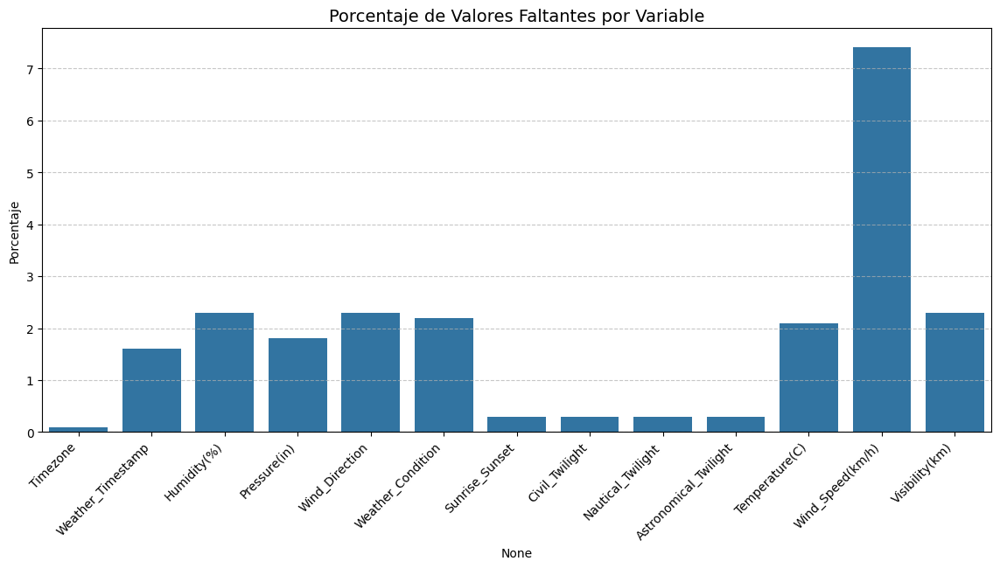
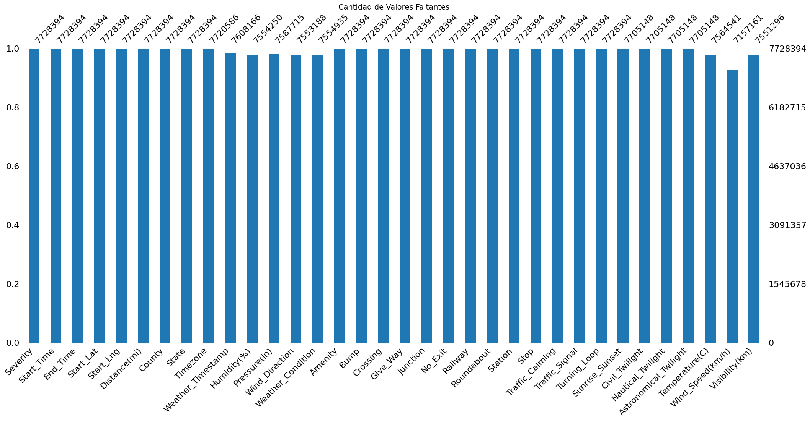

Carga de librerías y configuración inicial#
import pandas as pd
import numpy as np
import matplotlib.pyplot as plt
import seaborn as sns
import missingno as msno
import warnings
from scipy.stats import ks_2samp
from pathlib import Path
from geopandas import GeoDataFrame
import geopandas as gpd
from geopandas.tools import sjoin
---------------------------------------------------------------------------
ModuleNotFoundError Traceback (most recent call last)
Cell In[1], line 9
7 from scipy.stats import ks_2samp
8 from pathlib import Path
----> 9 from geopandas import GeoDataFrame
10 import geopandas as gpd
11 from geopandas.tools import sjoin
ModuleNotFoundError: No module named 'geopandas'
INPUT_PATH = Path("accidentes.csv")
OUTPUT_PATH = Path("datos_procesados.parquet")
warnings.filterwarnings("ignore")
pd.set_option("display.max_columns", None)
Cargar datos y eliminación de columnas innecesarias#
df = pd.read_csv("accidentes.csv", low_memory=False, parse_dates=["Start_Time", "End_Time", "Weather_Timestamp"])
cols_to_drop = [
"Wind_Chill(F)", "Description", "Source", "Street",
"City", "Zipcode", "Country", "Airport_Code", "ID","End_Lng","End_Lat",'Precipitation(in)', "Temperature(F)", "Wind_Speed(mph)", "Visibility(mi)"
]
df["Temperature(C)"] = (df["Temperature(F)"] - 32) * 5/9
df["Wind_Speed(km/h)"] = df["Wind_Speed(mph)"] * 1.60934
df["Visibility(km)"] = df["Visibility(mi)"] * 1.60934
if "End_Lat" in df.columns and "End_Lng" in df.columns:
df.drop(columns=[col for col in cols_to_drop if col in df.columns], inplace=True)
Análisis exploratorio de datos general del dataset#
print("\n *Resumen Estadístico de Variables Numéricas:*")
print(df.describe())
*Resumen Estadístico de Variables Numéricas:*
Severity Start_Lat Start_Lng Distance(mi) \
count 7.728394e+06 7.728394e+06 7.728394e+06 7.728394e+06
mean 2.212384e+00 3.620119e+01 -9.470255e+01 5.618423e-01
min 1.000000e+00 2.455480e+01 -1.246238e+02 0.000000e+00
25% 2.000000e+00 3.339963e+01 -1.172194e+02 0.000000e+00
50% 2.000000e+00 3.582397e+01 -8.776662e+01 3.000000e-02
75% 2.000000e+00 4.008496e+01 -8.035368e+01 4.640000e-01
max 4.000000e+00 4.900220e+01 -6.711317e+01 4.417500e+02
std 4.875313e-01 5.076079e+00 1.739176e+01 1.776811e+00
Weather_Timestamp Humidity(%) Pressure(in) \
count 7608166 7.554250e+06 7.587715e+06
mean 2020-06-02 10:06:41.888674560 6.483104e+01 2.953899e+01
min 2016-01-14 19:51:00 1.000000e+00 0.000000e+00
25% 2018-11-20 18:35:00 4.800000e+01 2.937000e+01
50% 2020-11-10 13:53:00 6.700000e+01 2.986000e+01
75% 2022-01-19 14:27:00 8.400000e+01 3.003000e+01
max 2023-03-31 23:53:00 1.000000e+02 5.863000e+01
std NaN 2.282097e+01 1.006190e+00
Temperature(C) Wind_Speed(km/h) Visibility(km)
count 7.564541e+06 7.157161e+06 7.551296e+06
mean 1.647960e+01 1.236857e+01 1.462951e+01
min -6.722222e+01 0.000000e+00 0.000000e+00
25% 9.444444e+00 7.402964e+00 1.609340e+01
50% 1.777778e+01 1.126538e+01 1.609340e+01
75% 2.444444e+01 1.673714e+01 1.609340e+01
max 9.722222e+01 1.749353e+03 2.253076e+02
std 1.056314e+01 8.730643e+00 4.326414e+00
print("\n *Resumen de Variables Categóricas:*")
print(df.describe(include="object"))
*Resumen de Variables Categóricas:*
Start_Time End_Time County State \
count 7728394 7728394 7728394 7728394
unique 6131796 6705355 1871 49
top 2021-01-26 16:16:13 2021-11-22 08:00:00 Los Angeles CA
freq 225 112 526851 1741433
Timezone Wind_Direction Weather_Condition Sunrise_Sunset \
count 7720586 7553188 7554935 7705148
unique 4 24 144 2
top US/Eastern CALM Fair Day
freq 3580167 961624 2560802 5334553
Civil_Twilight Nautical_Twilight Astronomical_Twilight
count 7705148 7705148 7705148
unique 2 2 2
top Day Day Day
freq 5695619 6076156 6377548
Tratamiento de valores faltantes#
Visualización de porcentaje de valores faltantes en variables#
missing_values = (df.isna().mean() * 100).round(1)
missing_values = missing_values[missing_values > 0]
plt.figure(figsize=(14, 6))
sns.barplot(x=missing_values.index, y=missing_values.values, color="#1f77b4")
plt.title("Porcentaje de Valores Faltantes por Variable", fontsize=14)
plt.ylabel("Porcentaje")
plt.xticks(rotation=45, ha="right")
plt.grid(axis="y", linestyle="--", alpha=0.7)
plt.show()

Cantidad de valores faltantes#
plt.figure(figsize=(12, 5))
msno.bar(df, color="#1f77b4")
plt.title("Cantidad de Valores Faltantes", fontsize=14)
plt.show()

Imputación de valores faltantes#
variables = {
'Timezone': 'categorical',
'Weather_Timestamp': 'datetime',
'Temperature(C)': 'numeric',
'Humidity(%)': 'numeric',
'Pressure(in)': 'numeric',
'Visibility(km)': 'numeric',
'Wind_Direction': 'categorical',
'Wind_Speed(km/h)': 'numeric',
'Weather_Condition': 'categorical',
'Sunrise_Sunset': 'categorical',
'Civil_Twilight': 'categorical',
'Nautical_Twilight': 'categorical',
'Astronomical_Twilight': 'categorical'
}
# Crear una copia del DataFrame original
df_original = df.copy()
# Eliminar filas con valores faltantes en 'Weather_Condition'
df.dropna(subset=['Weather_Condition'], inplace=True)
# Imputación de variables numéricas con la mediana del estado
for col, col_type in variables.items():
if col_type == 'numeric':
df[col] = df.groupby("State")[col].transform(lambda x: x.fillna(x.median()))
# Imputación de variables categóricas con muestreo basado en frecuencias
for col, col_type in variables.items():
if col_type == 'categorical':
probs = df[col].value_counts(normalize=True)
df[col] = df[col].apply(lambda x: np.random.choice(probs.index, p=probs.values) if pd.isna(x) else x)
Análisis de la imputación de los datos#
# Prueba de Kolmogorov-Smirnov para evaluar la distribución tras la imputación
ks_results = {}
alpha = 0.05
for col, col_type in variables.items():
if col_type == 'numeric' and df[col].isna().sum() == 0:
original_values = df_original[col].dropna()
imputed_values = df[col]
stat, p_value = ks_2samp(original_values, imputed_values)
ks_results[col] = {
'KS_Statistic': stat,
'P_Value': p_value,
'Same_Distribution': p_value > alpha
}
freq_results = {}
for col, col_type in variables.items():
if col_type == 'categorical' and col in df.columns:
original_freq = df_original[col].value_counts(normalize=True)
imputed_freq = df[col].value_counts(normalize=True)
freq_results[col] = {
'Original_Frequencies': original_freq,
'Imputed_Frequencies': imputed_freq
}
for col, result in ks_results.items():
print(f"Variable: {col}")
print(f" KS Statistic: {result['KS_Statistic']:.4f}")
print(f" P-Value: {result['P_Value']:.4f}")
print(f" ¿Mantiene la distribución? {'Sí' if result['Same_Distribution'] else 'No'}\n")
Variable: Temperature(C)
KS Statistic: 0.0012
P-Value: 0.0000
¿Mantiene la distribución? No
Variable: Humidity(%)
KS Statistic: 0.0020
P-Value: 0.0000
¿Mantiene la distribución? No
Variable: Pressure(in)
KS Statistic: 0.0010
P-Value: 0.0011
¿Mantiene la distribución? No
Variable: Visibility(km)
KS Statistic: 0.0004
P-Value: 0.5630
¿Mantiene la distribución? Sí
Variable: Wind_Speed(km/h)
KS Statistic: 0.0207
P-Value: 0.0000
¿Mantiene la distribución? No
for col, result in freq_results.items():
print(f"Variable: {col}")
print(" Frecuencias Originales:")
print(result['Original_Frequencies'])
print(" Frecuencias Imputadas:")
print(result['Imputed_Frequencies'])
print()
Variable: Timezone
Frecuencias Originales:
Timezone
US/Eastern 0.463717
US/Pacific 0.267206
US/Central 0.213147
US/Mountain 0.055931
Name: proportion, dtype: float64
Frecuencias Imputadas:
Timezone
US/Eastern 0.462903
US/Pacific 0.267552
US/Central 0.214789
US/Mountain 0.054756
Name: proportion, dtype: float64
Variable: Wind_Direction
Frecuencias Originales:
Wind_Direction
CALM 0.127314
S 0.055604
SSW 0.050951
W 0.050828
WNW 0.050148
NW 0.048900
Calm 0.048795
SW 0.048254
WSW 0.046842
SSE 0.046220
NNW 0.044144
N 0.040665
SE 0.039043
E 0.036927
ESE 0.035523
NE 0.034242
ENE 0.034221
NNE 0.033802
VAR 0.033174
South 0.023483
West 0.021812
North 0.020307
Variable 0.015092
East 0.013709
Name: proportion, dtype: float64
Frecuencias Imputadas:
Wind_Direction
CALM 0.127536
S 0.055765
SSW 0.051030
W 0.050978
WNW 0.050230
NW 0.048990
Calm 0.048744
SW 0.048350
WSW 0.046948
SSE 0.046327
NNW 0.044238
N 0.040769
SE 0.039133
E 0.037043
ESE 0.035630
ENE 0.034318
NE 0.034308
NNE 0.033881
VAR 0.033229
South 0.023492
West 0.021803
North 0.018462
Variable 0.015065
East 0.013731
Name: proportion, dtype: float64
Variable: Weather_Condition
Frecuencias Originales:
Weather_Condition
Fair 3.389575e-01
Mostly Cloudy 1.345074e-01
Cloudy 1.081521e-01
Clear 1.070483e-01
Partly Cloudy 9.251860e-02
...
Heavy Sleet / Windy 1.323638e-07
Sand / Windy 1.323638e-07
Heavy Rain Shower / Windy 1.323638e-07
Blowing Snow Nearby 1.323638e-07
Drifting Snow 1.323638e-07
Name: proportion, Length: 144, dtype: float64
Frecuencias Imputadas:
Weather_Condition
Fair 3.389575e-01
Mostly Cloudy 1.345074e-01
Cloudy 1.081521e-01
Clear 1.070483e-01
Partly Cloudy 9.251860e-02
...
Heavy Sleet / Windy 1.323638e-07
Sand / Windy 1.323638e-07
Heavy Rain Shower / Windy 1.323638e-07
Blowing Snow Nearby 1.323638e-07
Drifting Snow 1.323638e-07
Name: proportion, Length: 144, dtype: float64
Variable: Sunrise_Sunset
Frecuencias Originales:
Sunrise_Sunset
Day 0.692336
Night 0.307664
Name: proportion, dtype: float64
Frecuencias Imputadas:
Sunrise_Sunset
Day 0.69324
Night 0.30676
Name: proportion, dtype: float64
Variable: Civil_Twilight
Frecuencias Originales:
Civil_Twilight
Day 0.739197
Night 0.260803
Name: proportion, dtype: float64
Frecuencias Imputadas:
Civil_Twilight
Day 0.740131
Night 0.259869
Name: proportion, dtype: float64
Variable: Nautical_Twilight
Frecuencias Originales:
Nautical_Twilight
Day 0.788584
Night 0.211416
Name: proportion, dtype: float64
Frecuencias Imputadas:
Nautical_Twilight
Day 0.789507
Night 0.210493
Name: proportion, dtype: float64
Variable: Astronomical_Twilight
Frecuencias Originales:
Astronomical_Twilight
Day 0.8277
Night 0.1723
Name: proportion, dtype: float64
Frecuencias Imputadas:
Astronomical_Twilight
Day 0.82857
Night 0.17143
Name: proportion, dtype: float64
Limpieza y categorización de variables#
def categorize_weather(condition):
categories = {
"Lluvia ligera": ["Light Rain", "Light Rain Showers", "Light Rain Shower", "Light Rain / Windy"],
"Lluvia moderada": ["Rain", "Rain Shower", "Rain Showers", "Rain Shower / Windy"],
"Lluvia intensa": ["Heavy Rain", "Heavy Rain Showers", "Heavy Rain Shower", "Heavy Rain Shower / Windy", "Heavy Rain / Windy"],
"Llovizna ligera": ["Light Drizzle", "Light Drizzle / Windy"],
"Llovizna moderada": ["Drizzle", "Drizzle / Windy"],
"Llovizna intensa": ["Heavy Drizzle"],
"Nieve ligera": ["Light Snow", "Light Snow Showers", "Light Snow Shower", "Light Snow / Windy"],
"Nieve moderada": ["Snow", "Snow Showers", "Snow / Windy"],
"Nieve intensa": ["Heavy Snow", "Heavy Snow Showers", "Heavy Snow / Windy"],
"Aguanieve ligera": ["Light Sleet", "Light Snow and Sleet", "Light Snow and Sleet / Windy"],
"Aguanieve moderada": ["Sleet", "Snow and Sleet", "Snow and Sleet / Windy"],
"Aguanieve intensa": ["Heavy Sleet", "Heavy Sleet / Windy"],
"Granizo ligero": ["Light Hail", "Small Hail"],
"Granizo moderado": ["Hail"],
"Cielo despejado": ["Clear", "Fair"],
"Nublado": ["Cloudy", "Mostly Cloudy", "Scattered Clouds", "Overcast", "Partly Cloudy"],
"Tormenta eléctrica": ["Thunderstorm", "Thunder", "T-Storm", "Thunder in the Vicinity", "Thunder / Windy", "Thunder / Wintry Mix", "Light Thunderstorm"],
"Tormentas fuertes": ["Heavy T-Storm", "Heavy Thunderstorms and Rain", "Heavy Thunderstorms and Snow", "Heavy T-Storm / Windy"],
"Tormenta con granizo": ["Thunder and Hail", "Thunder and Hail / Windy", "Heavy Thunderstorms with Small Hail"],
"Lluvia helada ligera": ["Light Freezing Rain", "Light Freezing Rain / Windy"],
"Lluvia helada moderada": ["Freezing Rain", "Freezing Rain / Windy"],
"Lluvia helada intensa": ["Heavy Freezing Rain", "Heavy Freezing Rain / Windy"],
"Llovizna helada ligera": ["Light Freezing Drizzle"],
"Llovizna helada moderada": ["Freezing Drizzle"],
"Llovizna helada intensa": ["Heavy Freezing Drizzle"],
"Niebla ligera": ["Mist", "Light Fog", "Partial Fog", "Shallow Fog", "Light Haze"],
"Niebla densa": ["Fog", "Fog / Windy", "Patches of Fog", "Patches of Fog / Windy", "Shallow Fog / Windy", "Light Freezing Fog"],
"Humo y neblina": ["Haze", "Smoke", "Heavy Smoke", "Haze / Windy", "Smoke / Windy"],
"Viento fuerte": ["Blowing Dust / Windy", "Cloudy / Windy", "Fair / Windy", "Mostly Cloudy / Windy", "Partly Cloudy / Windy", "Windy", "Blowing Sand", "Widespread Dust", "Blowing Dust", "Blowing Snow Nearby", "Blowing Snow", "Sand / Windy", "Sand / Dust Whirlwinds", "Sand / Dust Whirls Nearby", "Sand / Dust Whirlwinds / Windy", "Duststorm", "Drifting Snow / Windy"],
"Mezcla invernal": ["Wintry Mix", "Wintry Mix / Windy", "Snow and Thunder", "Snow and Thunder / Windy", "Light Snow with Thunder", "Rain and Sleet"],
"Tornado": ["Tornado", "Funnel Cloud"],
"Otros": ["Volcanic Ash", "Showers in the Vicinity", "Light Rain with Thunder", "Low Drifting Snow", "Light Ice Pellets", "Squalls", "N/A Precipitation", "Sand", "Snow Grains", "Heavy Ice Pellets", "Drizzle and Fog", "Light Snow Grains", "Heavy Blowing Snow", "Light Blowing Snow", "Dust Whirls", "Sleet and Thunder", "Heavy Sleet and Thunder", "Heavy Sleet / Windy"]
}
for category, values in categories.items():
if condition in values:
return category
return "Desconocido"
def assign_weather_categories(df, column_name="Weather_Condition"):
df[column_name] = df[column_name].apply(categorize_weather)
return df
def clean_temperature(temp):
if temp < -62.2:
return np.random.uniform(-62.2, -61.9)
elif temp > 56.7:
return np.random.uniform(56.5, 56.7)
return temp
def clean_pressure(pres):
if pres < 25 or pres > 32:
return None
elif pres < 25.69:
return np.random.uniform(25.69, 25.9)
elif pres > 31.42:
return np.random.uniform(31.2, 31.42)
def clean_visibility(vis):
return np.clip(vis, 0, 10)
# Corrección de valores atípicos en temperatura, presión y visibilidad
df["Temperature(C)"] = df["Temperature(C)"].apply(clean_temperature)
df["Pressure(in)"] = df["Pressure(in)"].apply(clean_pressure)
df["Visibility(km)"] = df["Visibility(km)"].apply(lambda x: np.clip(x, 0, 16.09))
df = assign_weather_categories(df, "Weather_Condition")
# Eliminación de filas con valores nulos en 'Pressure(in)'
df = df.dropna(subset=["Pressure(in)"])
geometry = gpd.points_from_xy(df["Start_Lng"], df["Start_Lat"])
gdf = gpd.GeoDataFrame(df, geometry=geometry, crs="EPSG:4326")
# Cargar archivo GeoJSON con los estados de EE.UU.
states = gpd.read_file("https://raw.githubusercontent.com/python-visualization/folium/main/examples/data/us-states.json")
states = states.to_crs("EPSG:4326")
gdf = gpd.sjoin(gdf, states[['geometry', 'name']], how='left', predicate='within')
gdf.drop(columns=['index_right'], inplace=True, errors='ignore')
gdf["Start_Time"] = pd.to_datetime(gdf["Start_Time"], errors="coerce")
# Guardar el dataset procesado
if not OUTPUT_PATH.exists():
gdf.to_parquet(OUTPUT_PATH, index=False)
print(f"\nDataset procesado guardado en: {OUTPUT_PATH}")
else:
print("\n¡El archivo procesado ya existe! Elimínalo para regenerarlo.")
¡El archivo procesado ya existe! Elimínalo para regenerarlo.